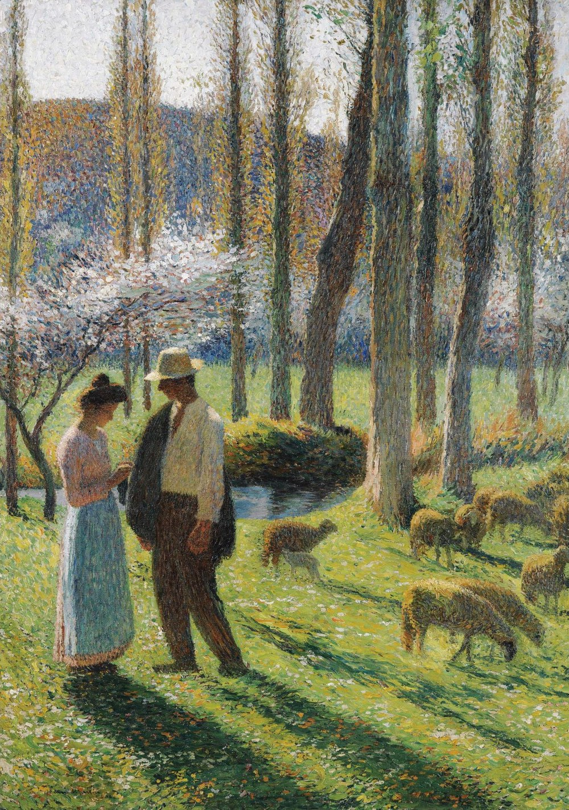

Анри Жан Гийом Мартен
Le paysan et la bergère (Крестьянин и пастушка), 1903

Холст, масло, 90 x 65 см
Частная коллекция, Франция (приобретена в 1940-х годах). Затем по наследству перешла к нынешнему владельцу.
В 1892 году Анри Мартен получил первый из своих многочисленных заказов на роспись стен от города Парижа. Его попросили украсить одну из официальных приёмных в недавно построенном Отель-де-Виль, который сгорел во время Коммуны 1871 года. В конце 19 века большинство художников-монументалистов писали свои работы на холсте, а не на открытом воздухе, которые затем прикреплялись к стене. Это позволило художникам выставлять свои работы в Салоне, и росписи Мартина получили немало похвал критиков, влиятельный Гюстав Жеффруа заявил: «Его работа, несомненно, одна из самых интересных, которые мы видели здесь или где-либо ещё за долгое время... Анри Мартен... обладает настоящим чувством настенного декора» Будучи уроженцем Тулузы, Мартин был очевидным выбором для заказа ряда декоративных панно для Капитолия своего родного города в 1890-х годах. Его залитые солнцем пейзажи и изображения сельскохозяйственных рабочих региона позволили ему уловить аграрный характер Лангедока и создать гармоничное видение человека в природе, которое прославляло регион. Данная работа отражает идеальное видение сельской жизни, которое Мартин развил в этих панно, а сильный романтический подтекст является намеренным, который включает в себя важный аспект культуры города - его традицию трубадуров.